Ukázky
Pár snímků
Tohle je jen ochutnávka. Další série najdeš na foto webu, pozor, dá se tam zaseknout.
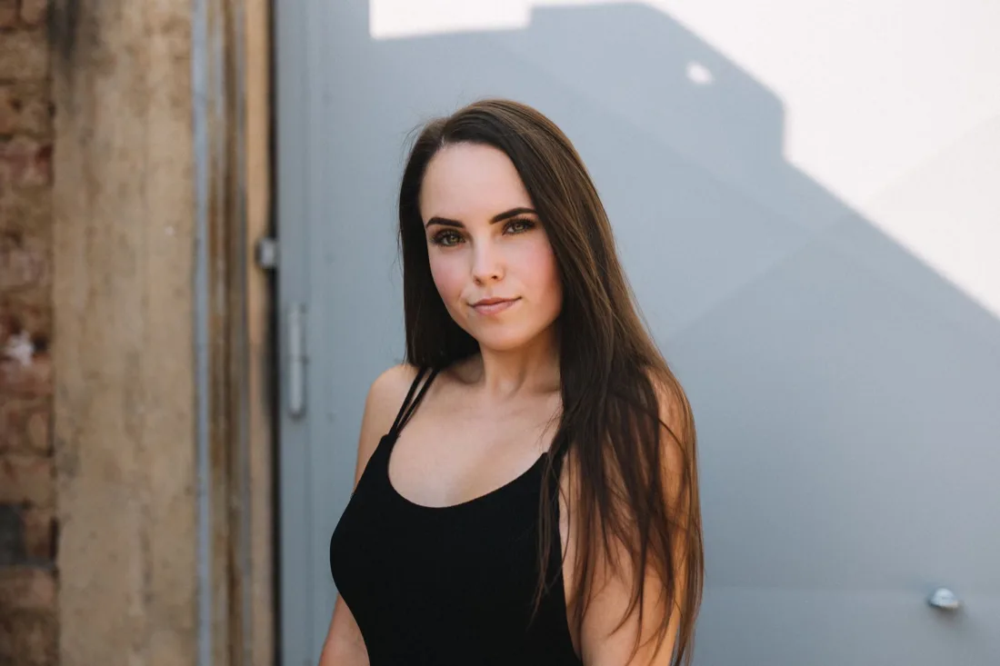
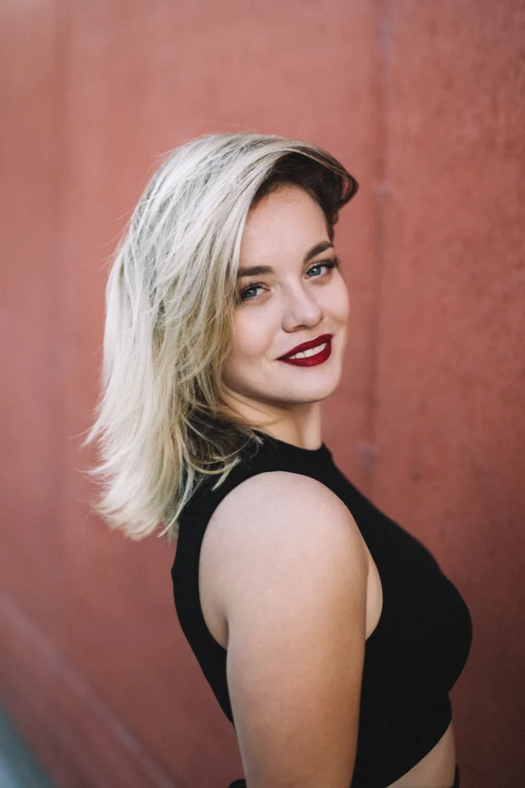
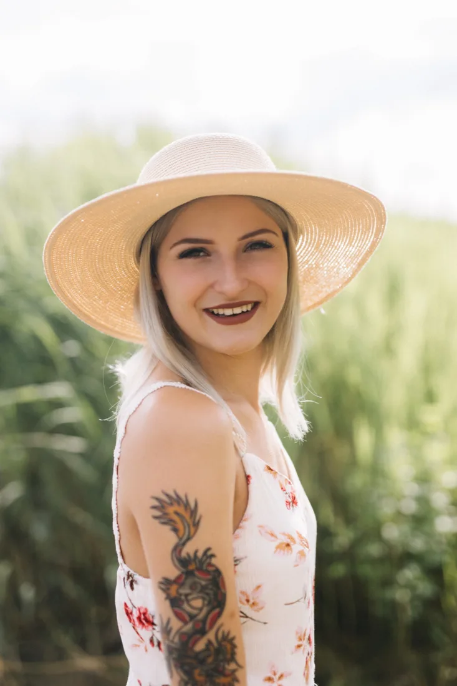
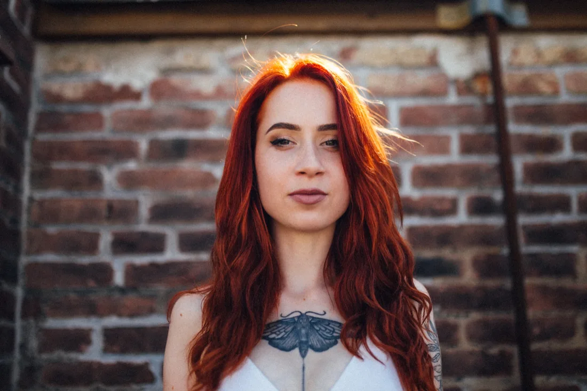
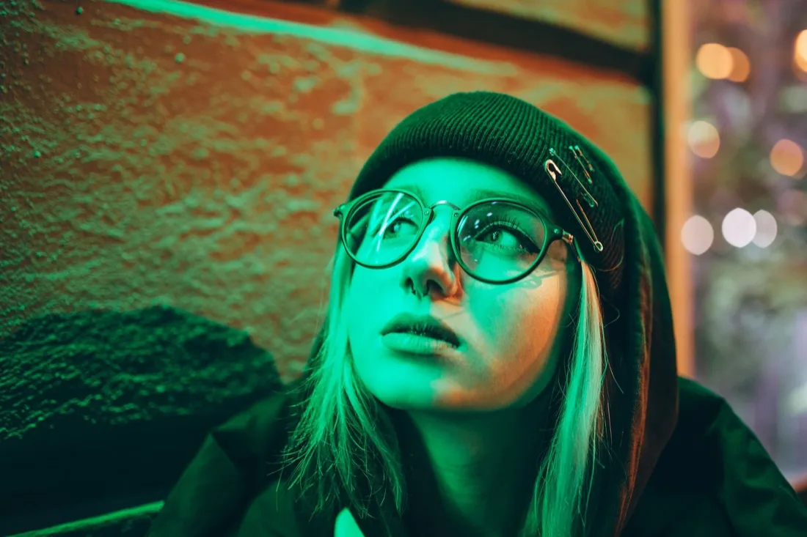
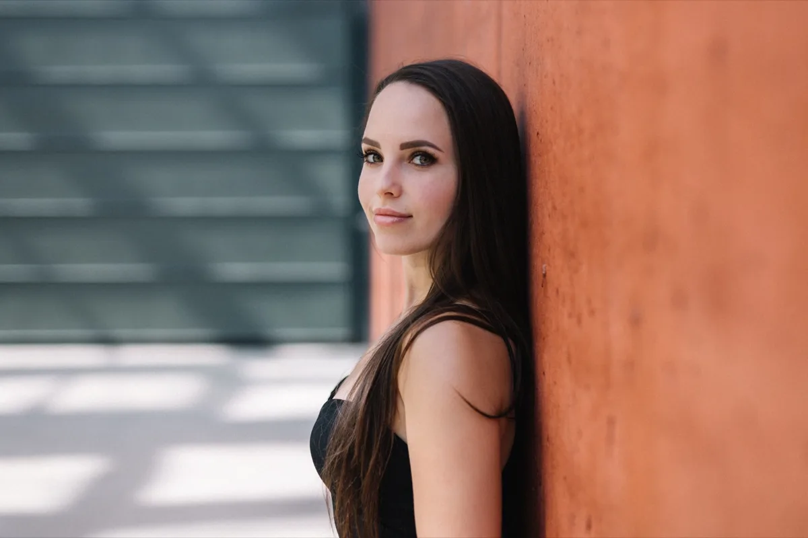
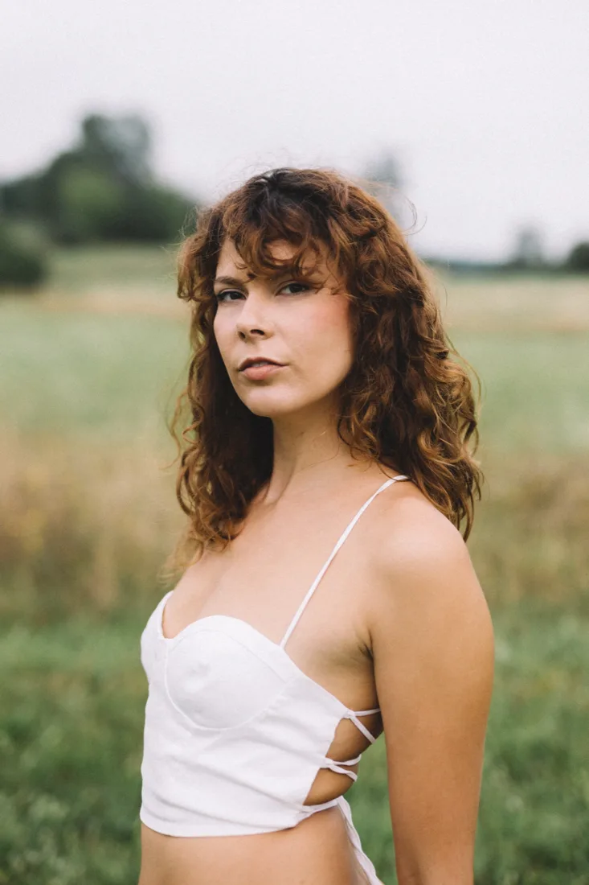
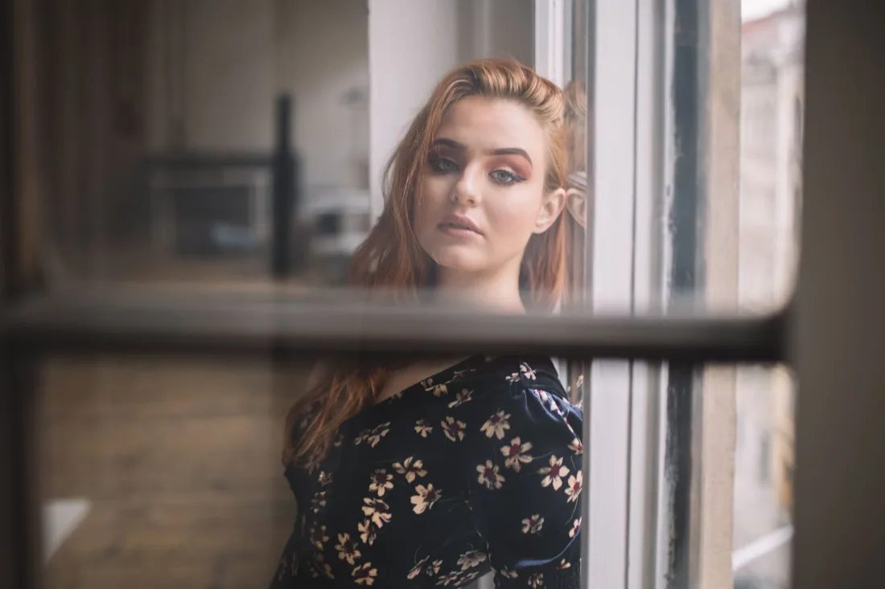
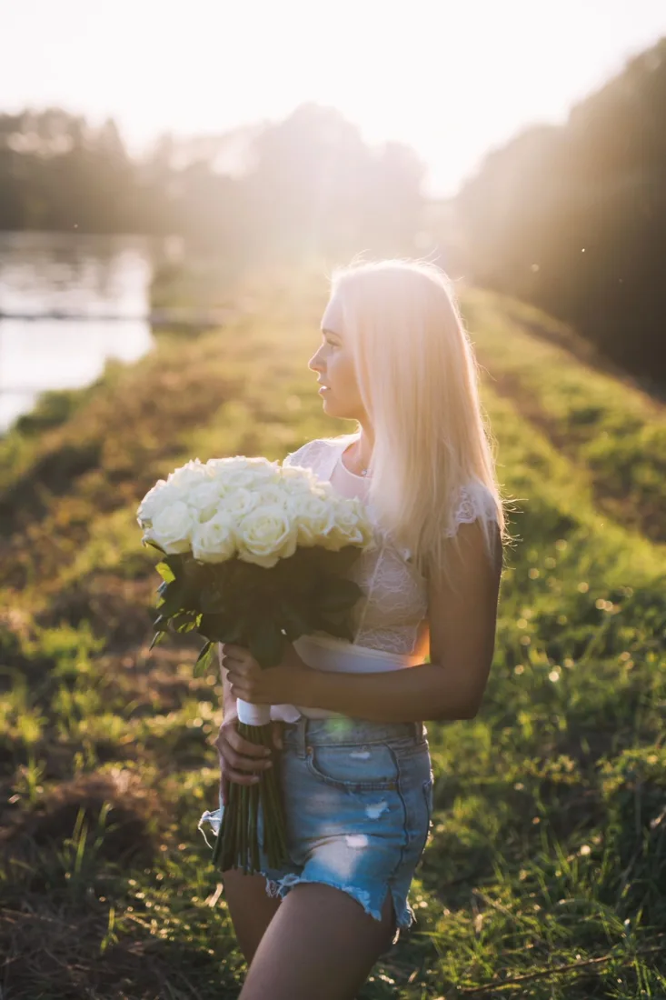
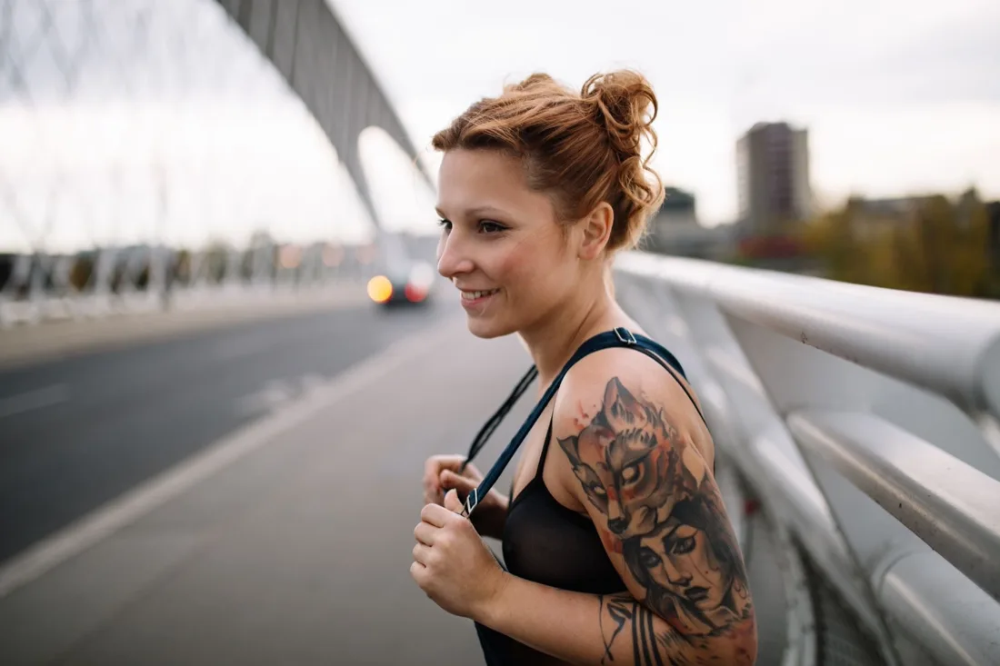
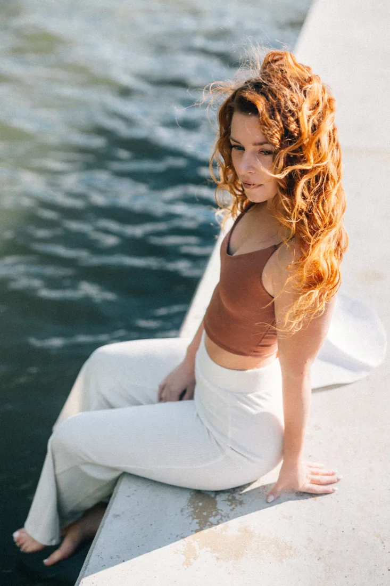
Proč to dělám
Baví mě lidé, ne pózy
Dobrý portrét nevzniká z techniky. Vzniká ve chvíli, kdy se před objektivem přestaneš hlídat a z pózy zůstane jen člověk.
Nejvíc mě na focení baví lidé a to, jak se jejich nálada ukáže v obličeji. Tu na foťáku nenastavíš. Můžu jen počkat a nepokazit ji.
Portréty fotím řadu let a Plzeň je můj domov i ateliér, takže vím, kde se tu schovává hezké světlo. Fotky pak použiješ, kam chceš: na profilovku, na sítě, do prezentace, na web, nebo si je jen tak pověsíš doma.
Portréty jsou moje srdcovka, ale u nich nekončím. Potřebuješ obsah na sítě, který bude vypadat jako z jedné dílny? Nebo fotky pro svou značku? Rád je nafotím. A když se hodí klasický firemní portrét pro tým nebo web firmy, vyfotím i ten.
Jak focení probíhá
Od první zprávy po hotové fotky
-
Domluva
Nejdřív si popovídáme. K čemu fotky potřebuješ a jak mají působit? Na sítě, do prezentace, na web, nebo jen pro radost? Podle toho se pak řídí všechno ostatní.
-
Místo a čas
Vybereme místo a dobu, kdy sedí světlo. Ve městě, v přírodě nebo jinde, podle toho, jaký má být výsledek a kde se budeš cítit dobře.
-
Focení
Fotím v klidu a vedu tě. Nemusíš umět pózovat, to je moje starost. Povídáme si, procházíme se, zkoušíme. Nejlepší záběry stejně vznikají mezi pózami, když se zrovna směješ.
-
Výběr a úprava
Nejlepší záběry ti doporučím, ale poslední slovo máš ty. Vybereš si ty, které se ti líbí, a já jim dodám styl: vyladím světlo a barvy a uklidím drobnosti, které ruší. Na fotce máš vypadat jako ty, jen v dobrý den.
-
Předání
Hotové fotky dostaneš v elektronické podobě, připravené na sítě, na web, nebo do tisku. A pak už se jimi jen chlubíš.
Na čem mi záleží
Čtyři věci, které si hlídám
Přirozenost
Na fotce máš vypadat jako ty, jen v lepším světle. Žádná křečovitá póza, žádná plastová retuš.
Světlo
Světlo dělá z fotky portrét. Nepřidávám ho, hledám ho. Podle něj vybírám místo i čas.
Klid
Když jsi v klidu, vypadáš dobře. Proto se nikam nespěchá, nikdo tě nepopohání a smích je vítaný.
Výběr
Radši pár fotek, které za to stojí, než hromada průměrných. Ty nejlepší ti doporučím a ty si vybereš, které půjdou ven.
Časté otázky
Než se ozveš
K čemu se portrétní fotky hodí?
Na sociální sítě, profilovky, do prezentací, na web, do článků a medailonků, nebo jen tak pro radost. Při domluvě společně zjistíme, co potřebuješ, a podle toho focení naplánuju.
Fotíš i něco jiného než portréty?
Ano. Kromě portrétů ti rád nafotím obsah pro sociální sítě nebo pro tvoji značku. A když potřebuješ klasické firemní portréty, třeba pro tým nebo web firmy, zvládnu i ty. Napiš mi, co máš v plánu, a domluvíme se.
Co když neumím pózovat?
To nevadí, většina lidí neumí. Povedu tě celým focením a budu říkat, co dělat. A nejlepší záběry stejně vznikají ve chvíli, kdy zapomeneš, že tě někdo fotí.
Co si mám obléct?
Něco, v čem se cítíš dobře a co k tobě sedí. Vyhni se výrazným potiskům a nápisům, které kradou pozornost obličeji. Detaily doladíme při domluvě.
Kde focení probíhá?
Nejčastěji venku v Plzni a okolí, ve městě nebo v přírodě, kde je hezké přirozené světlo. Místo vybereme podle toho, jaký má být výsledek a kde se budeš cítit dobře.
Upravuješ fotky?
Ano, jemně: světlo, barvy a drobné rušivé detaily. Cílem není změnit, jak vypadáš, ale ukázat tě v dobrém světle.
Tak kdypa se uvidíme?
Portrét, fotky na sítě, nebo něco úplně jiného? Napiš mi, co máš v hlavě, a něco vymyslíme.
Napsat mi